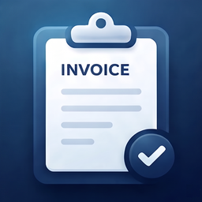

Last updated: July 4, 2026
This privacy policy applies to the mobile application “Invoice Maker: PDF Estimate” provided by the developer.
Invoice Maker: PDF Estimate does not require account registration and does not ask users to enter personal information for account creation.
The app allows users to create invoices, estimates, and quotes by entering business information, client details, item or service details, prices, quantities, tax rates, discounts, dates, notes, and optional logo images. These values are used only for app functionality within the app and are not sent to the developer.
The app does not collect, store, or share any documents, business profiles, client details, saved items, notes, PDF contents, or logo images on external servers operated by the developer.
Invoice Maker: PDF Estimate stores app data locally on the user’s device, including created documents, business profile information, saved clients, saved items or services, and optional business logo data.
This local data is used to display, edit, reuse, and export invoices, estimates, and quotes as PDF documents. The developer does not receive or store this data on external servers.
Invoice Maker: PDF Estimate may also store simple app data locally on the user’s device, such as whether Pro features are active through an in-app purchase or subscription.
Invoice Maker: PDF Estimate allows users to create business documents and enter related information such as business details, client details, line items, tax, discounts, dates, notes, and logo images.
Documents, clients, items, business profile data, notes, and logo images are stored locally on the user’s device. The developer does not automatically receive, access, or review the content entered by users.
Invoice Maker: PDF Estimate allows users to export invoices, estimates, and quotes as PDF documents.
PDF files are generated on the user’s device. When users choose to share or send a PDF, the sharing action is handled by the user’s selected apps or services. The developer does not receive copies of exported PDF documents.
Invoice Maker: PDF Estimate offers optional in-app purchases or subscriptions for Pro features, such as unlimited documents, business logo support, estimate and quote conversion, and removing ads.
In-app purchases and subscriptions are processed by Apple through the App Store. The developer does not receive or store users’ payment card information.
Invoice Maker: PDF Estimate may display banner ads using Google AdMob.
Third-party advertising services may collect and use certain information, such as device identifiers, advertising identifiers, approximate location, and ad interaction data, in accordance with their own privacy policies.
Users may remove banner ads through an optional Pro subscription or in-app purchase.
Invoice Maker: PDF Estimate uses the following third-party services:
These services may process data according to their own privacy policies and platform rules.
Invoice Maker: PDF Estimate is not specifically directed at children under the age of 13. The app does not knowingly collect personal information from children.
If you believe that a child has provided personal information through the app, please contact the developer so that appropriate action can be taken.
This privacy policy may be updated from time to time. Any significant changes will be communicated through the app or via the distribution platform.
If you have any questions about this privacy policy, please contact us: